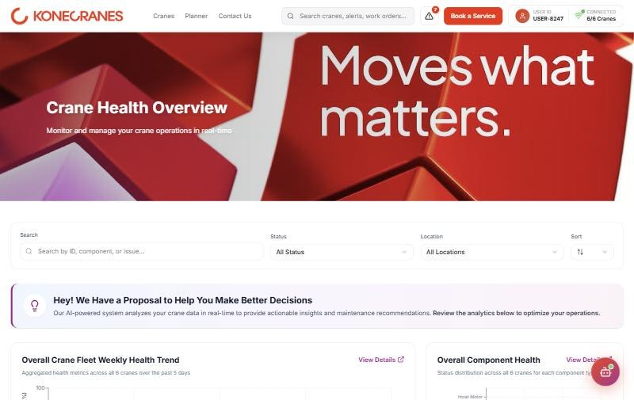
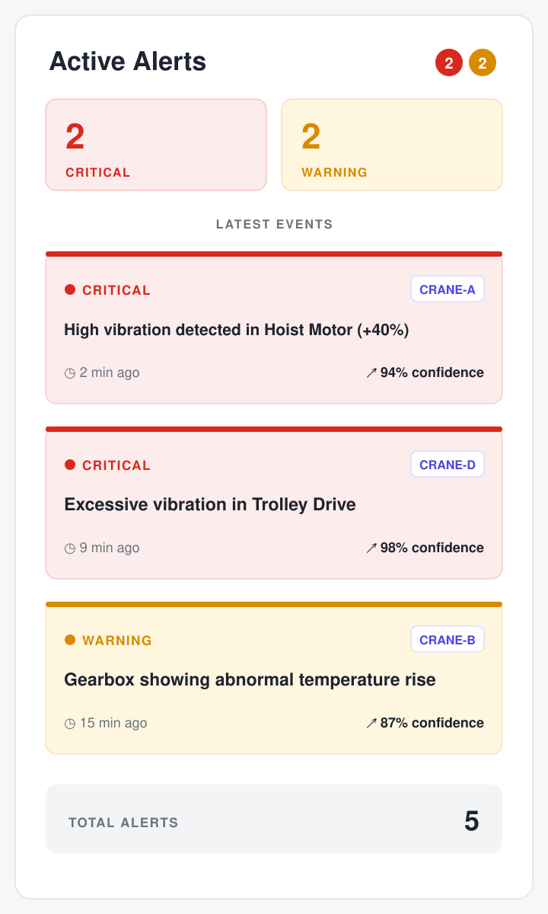
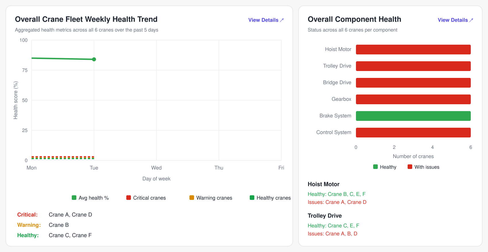

Step 1 of 5
Case study · Industrial UX · Demola Global × Konecranes · 2026
A crane can report its vibration, temperature and load every few seconds. The people looking after it still ask what should I do right now? I designed a tool that answers that, and shows the evidence behind each answer.
Projected success metrics set with the challenge team, not measured outcomes.
01 · The problem
Crane systems continuously track temperature, vibration, load cycles and maintenance history. Even so, most decisions still come from someone’s experience. The dashboards show numbers and stop there.
“What should I do right now?”
The question every role is left askingNeed clear alerts and simple instructions.
Can’t interpret complex dataNeed diagnostic insights and checklists.
Lack context for repairsNeed scheduling clarity and a resource view.
No visibility into urgencyNeed risk and cost visibility.
No decision traceabilityWhy it matters. On a crane, a slow decision costs downtime and can put people at risk. The data was there. Nobody had turned it into a next step.
02 · Design reasoning
My first concept predicted outcomes with simulations. It looked clever, but the people we tested with didn’t trust it. So I stopped predicting the future and focused on helping them decide today.
A simulation engine that ran multiple maintenance scenarios and predicted their outcomes.
Comparable options, transparent evidence and confidence scores, routed to the right role.
People could check it themselves.
No simulation engine to build first.
Built around real role needs.
Easier for a team to try in a pilot.
What people asked for was evidence they could check, and the final say.
03 · System architecture
From sensor detection to verified repair, across every role. Step through one real scenario from the service blueprint: a bearing fault on Crane A.
Step 1 of 5
04 · Core experience
Real-time awareness of crane health across every critical component.
Instead of one answer, users see multiple options compared on risk, cost and downtime. Try one.
Each recommendation shows the readings and past cases behind it.
Insights become actions by connecting each role in the process.
05 · Interface design
Clear hierarchy, role-based views and a next step at every touchpoint. Each alert answers two questions: why it matters, and what to do next.
Why it matters: vibration is up 40% against baseline over 8 hours.
What to do next: inspect the bearing assembly within 6 hours.
Why it matters: pressure fell 12% in 24 hours, a sign of a possible hydraulic leak.
What to do next: stop the crane and inspect the hydraulic lines.



06 · Validation
“I don’t need to know how it works. I need to know why it’s telling me this.”
My paraphrase of what testers kept saying07 · Value proposition
Projected success metrics for the system, used as targets for a pilot.
| Aspect | Initial | Final |
|---|---|---|
| Approach | Decision Twin (simulation) | Evidence-based guidance |
| Output | Predicted outcomes | Comparative scenarios |
| Trust model | Black-box AI | Explainable evidence |
| Complexity | High (simulation engine) | Low (clear UI) |
08 · Reflection
Crane software already collects plenty of data. What I learned is that the hard part is the last step: putting a clear choice in front of the right person, with the reasons attached.
“Dropping the simulation felt like a loss at first. It turned out to be the most useful decision in the project.”
Project reflection